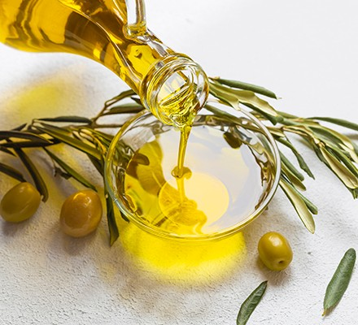

Odin Recipes
Home
Greek Salad
Tzatziki
Tirokafteri
Welcome! Here you'll find a few of my favorite Greek recipes, made simple and delicious.
Tip: When in doubt, just add a little more olive oil!

Explore the recipes below:
Greek Salad
Tzatziki
Tirokafteri
Seriously, olive oil makes everything better.